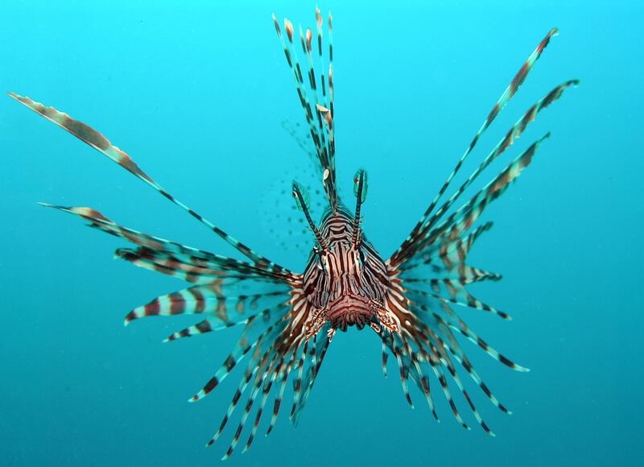

物理5–11 岁约 10 分钟
胸鳍当胳膊走才在沙上走得动，用尾巴摆着游就滑来滑去走不了？
同一只纸蝙蝠鱼。胸鳍当胳膊走才在沙上走得动；用尾巴摆着游就滑来滑去走不了。它那对胸鳍又厚又短，根部像小胳膊一样拐着，撑在沙上把身子架起来，配上底下的腹鳍，几个点一起着地，一步一步在沙上挪；改用尾巴摆，那是水里的游法，贴着沙只会打滑。本页不追真的，观察后洗手。
同一只纸蝙蝠鱼，臂走一回，用尾巴摆着游一回

胸鳍当胳膊走才在沙上走得动。用尾巴摆着游就滑来滑去走不了。先点「臂走」，再点「试一试」。
先猜一猜，再试
第 1 题：调到 80，胸鳍当胳膊走，在沙上走得动吗？
押一个。把滑条调到 80，再点试一试。
第 2 题：调到 10，用尾巴摆着游，还在沙上走得动吗？
押好后滑条 10，再试一试。
第 3 题：调到 50，刚好一半，算在沙上走得动了吗？
押好后滑条 50，再试一试。
同一只纸蝙蝠鱼：胸鳍当胳膊走才在沙上走得动；用尾巴摆着游就滑来滑去走不了
先点「臂走」再点「试一试」，看在沙上走得动。再点对照试一次，看是不是滑来滑去走不了。
纸蝙蝠鱼始终是同一只。胸鳍根部拐着像小胳膊，撑在沙上把扁扁的身子架起来，腹鳍再撑一把，几个点一起着地，才一步一步走得动；用尾巴左右摆是把水往后推的游法，贴着沙迈不出步，只会滑来滑去。狮子鱼把胸鳍张成大扇子是亮警告的账——另开，不比。
舞台上的「在沙上走得动」是本页比较尺子：滑条 ≥ 80 才算在沙上走得动。刚好 50 还不够。不要追真的，观察后洗手。本页用纸板。
臂走图鉴
点一张，对照舞台：谁让胸鳍当胳膊走才在沙上走得动，谁让用尾巴摆着游就滑来滑去走不了。
点一张图鉴，对照为什么胸鳍当胳膊走才在沙上走得动。
猜一猜
同一只纸蝙蝠鱼要在沙上走得动，靠的是臂走，还是用尾巴摆着游？
先押一个，再点「看答案」。
任务：臂走和用尾巴摆着游都试
先把滑条调到 80 或更高试一次，再调到 20 或更低试一次。两头都点过「试一试」即可完成。
开放式提示不会代替上面的正式任务。
尚未完成：先臂走试一次，或用尾巴摆着游试一次。
同一只纸蝙蝠鱼，先臂走试一次，再对照试一次
舞台上只改一件事：胸鳍当胳膊走有多够。同一只纸蝙蝠鱼、同一处，先臂走试一次，看在沙上走得动没有；再对照试一次，看是不是滑来滑去走不了。这样比，才知道在沙上走得动靠的是用鳍撑着走，不是「摆尾也一样」，也不是「换成狮子鱼」。
回家只带两句：「胸鳍当胳膊走才在沙上走得动」；「用尾巴摆着游就滑来滑去走不了」。不要写成「游得越快越好」。
胸鳍撑在沙上把身子架起来，几个点着地，才走得稳。
改用尾巴摆，水里的游法贴着沙只会打滑，迈不出步。
狮子鱼张扇子鳍亮警告，另开；本页比用鳍撑着走还是摆尾游，两句不要并成一句。
不追、不抓，本页用纸板对照。
这在教什么：孩子要能对臂走和用尾巴摆着游各报成不成，并否定「狮子鱼软身子」和「用尾巴摆着游更能在沙上走得动」。
- 臂走那一次，在沙上走得动了吗？
- 用尾巴摆着游，台上还在沙上走得动吗？
- 本页要比狮子鱼软身子吗？
- 能去追真蝙蝠鱼吗？
在沙上走得动靠胸鳍当胳膊走，不是狮子鱼软身子，更不要追真的
蝙蝠鱼的胸鳍又厚又短，根部像小胳膊一样拐着，撑在沙上把扁扁的身子架起来，腹鳍再撑一把，几个点一起着地，一步一步在海底挪。改用尾巴摆，贴着沙只会滑来滑去，迈不出一步。
不要把它讲成「游得越快越好」或「换成别的鱼就能成」。狮子鱼张开扇子鳍是亮警告的另一套；摆尾是水里的游法，到了沙上就使不上劲。
不追真的，不抓。看完按二十秒洗手。本页用纸板。
给家长的问题
- 臂走那一次，孩子指的是胸鳍当胳膊走，还是在说「它比较猛」？让他再指一次胸鳍当胳膊走。
- 用尾巴摆着游，为什么滑来滑去走不了？哪一句四岁听得懂？
- 如果他说「狮子鱼软身子就能进」——狮子鱼软身子是哪一笔账？本页少的是臂走还是狮子鱼软身子？
- 狮子鱼软身子和蝙蝠鱼臂走，差在「狮子鱼软身子」还是「胸鳍当胳膊走」？
- 不追、不抓、看完洗手：红线怎么说？本页能当追赶课吗？
背后的原理
舞台上不写这些词，留给孩子用眼睛看。蝙蝠鱼（Ogcocephalidae）胸鳍当胳膊走，才在沙上走得动。用尾巴摆着游滑来滑去走不了。不是狮子鱼那种软身子。不要抓真的。本页用臂走 ≥ 80 当门槛，≤ 20 算用尾巴摆着游。刚好 50 不算。
这不是狮子鱼软身子说明书，也不是用尾巴摆着游。狮子鱼软身子另开，都不要并进本页第一完成句。
人去追活蝙蝠鱼会让它受惊。观察后洗手。舞台用纸板。
接下来可以去
带走句：胸鳍当胳膊走才在沙上走得动；用尾巴摆着游就滑来滑去走不了。蝙蝠鱼观察站看真臂走。